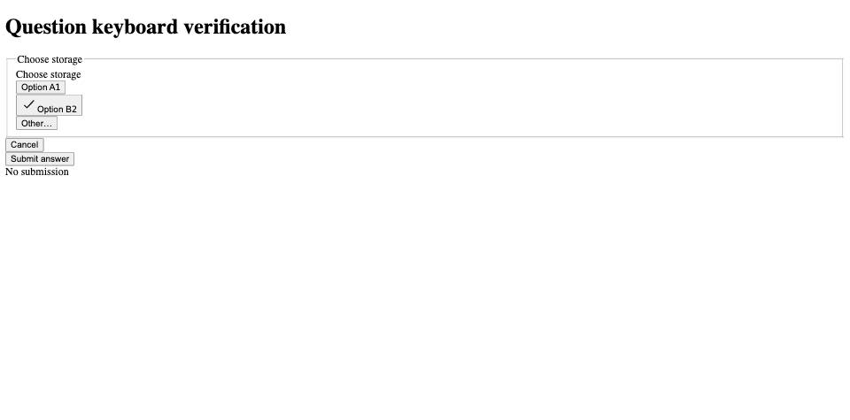

#4137 · Question shortcut submission
Bug · Medium priority · Low effort · ui · ask-user-question
2026-09-23 · Issue · Base a13140ac188a021ae83bea6ce5aa34216dd82ae2
REPRODUCED · Root-cause confidence: high
TL;DR
Number shortcuts update selection without moving focus, and the question form has no Enter handler for option answers. Pressing a number selects an option, but pressing Enter afterward does not submit. The focused regression fails in two clean checkouts, and native Chromium input confirms the behavior in a component harness. The proposed fix focuses the form after numbered option selection and handles plain Enter only while that form container owns focus.
Claims vs findings
| Claim | Finding |
|---|---|
| Number selection followed by Enter does not submit | Verified in two DOM test runs and a Chromium component harness. |
| Clicking Submit works | Verified by existing tests and native browser click. |
| Clicking an option before Enter submits | Not reproduced on current main: the option remains focused and no submission occurs in the harness. The original Brave/Omarchy interaction was not tested. |
Environment
Trusted get-bb/bb origin/main at a13140ac188a021ae83bea6ce5aa34216dd82ae2; macOS arm64; Node 22.22.3; pnpm 9.15.0; Vitest 4.1.1; jsdom and headless Chromium through BB Browser Automation. No provider or user runtime data was used. The harness uses synthetic options, no server database, and loopback ports 49137 (fix) and 49138 (base). The normal frozen install and all 60 build tasks succeeded. A broken local pnpm launcher was bypassed using npm_config_manage_package_manager_versions=false npx --yes pnpm@9.15.0.
Minimal reproduction
git clone https://github.com/get-bb/bb.git bb-4137 cd bb-4137 git checkout a13140ac188a021ae83bea6ce5aa34216dd82ae2 pnpm install --frozen-lockfile --prefer-offline pnpm exec turbo run build # Replace apps/app/src/components/thread/user-questions/QuestionForm.test.tsx # with the complete test file below. pnpm exec turbo run test --filter=@bb/app -- src/components/thread/user-questions/QuestionForm.test.tsx
Expected: one submission containing the second option. Actual in both base checkouts:
AssertionError: expected "vi.fn()" to be called 1 times, but got 0 times Tests 1 failed | 9 passed (10)
The selection assertion passes before the submission assertion fails. Regression patch (embedded below); complete test file (embedded below).
// @vitest-environment jsdom
import {
cleanup,
fireEvent,
render as renderReact,
} from "@testing-library/react";
import { afterEach, beforeEach, describe, expect, it, vi } from "vitest";
import { QuestionForm } from "@bb/shared-ui/question-form";
import type {
Question,
QuestionAnswer,
} from "@bb/shared-ui/question-form-state";
import { ThreadQuestionFormHost } from "./ThreadQuestionFormHost";
import { AppCommandProvider } from "@/components/commands/AppCommandProvider";
import { defaultAppSettings } from "@bb/domain";
type InteractionPayload = { questions: Question[] };
type InteractionResponse = { answers: Record<string, QuestionAnswer> };
vi.mock("@/hooks/queries/system-queries", () => ({
useSystemConfig: () => ({
data: {
generalSettings: { ...defaultAppSettings },
keybindings: [1, 2, 3].map((digit) => ({
command: `question.select.${digit}`,
desktopOnly: false,
shortcut: {
key: String(digit),
mod: false,
meta: false,
control: false,
alt: false,
shift: false,
},
when: { all: ["questionOpen"], none: [] },
})),
},
}),
}));
vi.mock("@/lib/bb-desktop", () => ({ getBbDesktopInfo: () => null }));
const pane = vi.hoisted(() => ({ isFocused: true }));
vi.mock("@/views/thread-detail/PaneContext", () => ({
useOptionalPaneContext: () => pane,
}));
beforeEach(() => {
pane.isFocused = true;
Object.defineProperty(window, "matchMedia", {
writable: true,
value: vi.fn((query: string) => ({
matches: false,
media: query,
onchange: null,
addEventListener: vi.fn(),
removeEventListener: vi.fn(),
addListener: vi.fn(),
removeListener: vi.fn(),
dispatchEvent: vi.fn(),
})),
});
});
afterEach(cleanup);
const singleSelect: InteractionPayload = {
questions: [
{
id: "q0",
prompt: "Which database should we use?",
shortLabel: "Database",
multiSelect: false,
allowFreeText: true,
options: [
{
value: "q0o0",
label: "Postgres",
description: "Relational, needs a server.",
preview: "CREATE TABLE users (id uuid primary key);",
},
{
value: "q0o1",
label: "SQLite",
description: "Embedded, zero setup.",
},
],
},
],
};
function render(
payload: InteractionPayload,
handlers: {
submit?: (value: InteractionResponse) => Promise<void>;
cancel?: () => Promise<void>;
} = {},
) {
return renderReact(
<AppCommandProvider>
<ThreadQuestionFormHost>
<QuestionForm
questions={payload.questions}
disabled={false}
cancelDisabled={false}
onSubmit={(answers) => {
void handlers.submit?.({ answers });
}}
onCancel={() => {
void handlers.cancel?.();
}}
/>
</ThreadQuestionFormHost>
</AppCommandProvider>,
);
}
function getButtonByText(
slot: ReturnType<typeof render>,
text: string,
): HTMLButtonElement {
const button = slot.getByText(text).closest("button");
if (!(button instanceof HTMLButtonElement)) {
throw new Error(`${text} is not rendered inside a button`);
}
return button;
}
describe("answering a single-select question", () => {
it("submits after a number shortcut followed by Enter", () => {
const submit = vi.fn(async () => undefined);
const slot = render(singleSelect, { submit });
fireEvent.keyDown(document.body, { key: "2" });
expect(getButtonByText(slot, "SQLite").getAttribute("aria-pressed")).toBe("true");
fireEvent.keyDown(document.activeElement ?? document.body, { key: "Enter" });
expect(submit).toHaveBeenCalledTimes(1);
});
it("submits the selected option value", () => {
const submit = vi.fn<(value: InteractionResponse) => Promise<void>>(
async () => undefined,
);
const slot = render(singleSelect, { submit });
expect(slot.getAllByText("Which database should we use?")).toHaveLength(2);
fireEvent.click(getButtonByText(slot, "SQLite"));
fireEvent.click(getButtonByText(slot, "Submit answer"));
expect(submit).toHaveBeenCalledTimes(1);
expect(submit.mock.calls[0]?.[0]).toEqual({
answers: { q0: { selected: ["q0o1"] } },
} satisfies InteractionResponse);
});
it("ignores answer shortcuts in an unfocused pane", () => {
pane.isFocused = false;
const slot = render(singleSelect);
fireEvent.keyDown(window, { key: "1" });
expect(getButtonByText(slot, "Postgres").getAttribute("aria-pressed")).toBe(
"false",
);
});
it("blocks submission until something is chosen", () => {
const slot = render(singleSelect);
const submitButton = getButtonByText(slot, "Submit answer");
expect(submitButton.disabled).toBe(true);
fireEvent.click(getButtonByText(slot, "Postgres"));
expect(submitButton.disabled).toBe(false);
});
it("reveals an option preview only while that option is selected", () => {
const slot = render(singleSelect);
const preview = "CREATE TABLE users (id uuid primary key);";
expect(slot.queryByText(preview)).toBeNull();
fireEvent.click(getButtonByText(slot, "Postgres"));
expect(slot.getByText(preview)).toBeTruthy();
fireEvent.click(getButtonByText(slot, "SQLite"));
expect(slot.queryByText(preview)).toBeNull();
});
it("makes 'Other' and a real option mutually exclusive", () => {
const submit = vi.fn<(value: InteractionResponse) => Promise<void>>(
async () => undefined,
);
const slot = render(singleSelect, { submit });
fireEvent.click(getButtonByText(slot, "Postgres"));
fireEvent.click(getButtonByText(slot, "Other…"));
const textarea = slot.getByLabelText("Database answer");
fireEvent.change(textarea, { target: { value: "DuckDB" } });
fireEvent.click(getButtonByText(slot, "Submit answer"));
expect(submit).toHaveBeenCalledTimes(1);
expect(submit.mock.calls[0]?.[0]).toEqual({
answers: { q0: { selected: [], freeText: "DuckDB" } },
} satisfies InteractionResponse);
});
it("selects an option with its number-key shortcut", () => {
const submit = vi.fn<(value: InteractionResponse) => Promise<void>>(
async () => undefined,
);
const slot = render(singleSelect, { submit });
fireEvent.keyDown(window, { key: "2" });
fireEvent.click(getButtonByText(slot, "Submit answer"));
expect(submit).toHaveBeenCalledTimes(1);
expect(submit.mock.calls[0]?.[0]).toEqual({
answers: { q0: { selected: ["q0o1"] } },
} satisfies InteractionResponse);
});
it("ignores number keys typed into the free-text box", () => {
const slot = render(singleSelect);
fireEvent.click(getButtonByText(slot, "Other…"));
const textarea = slot.getByLabelText("Database answer");
fireEvent.keyDown(textarea, { key: "1" });
expect(getButtonByText(slot, "Postgres").getAttribute("aria-pressed")).toBe(
"false",
);
});
});
describe("multi-select and multi-question flows", () => {
const multi: InteractionPayload = {
questions: [
{
id: "q0",
prompt: "Which extras?",
shortLabel: "Extras",
multiSelect: true,
allowFreeText: true,
options: [
{ value: "q0o0", label: "Metrics", description: "Prometheus." },
{ value: "q0o1", label: "Tracing", description: "OTel." },
],
},
{
id: "q1",
prompt: "Which database?",
shortLabel: "Database",
multiSelect: false,
allowFreeText: true,
options: [
{ value: "q1o0", label: "Postgres", description: "Server." },
{ value: "q1o1", label: "SQLite", description: "Embedded." },
],
},
],
};
it("keeps several options selected and walks both questions before submitting", () => {
const submit = vi.fn<(value: InteractionResponse) => Promise<void>>(
async () => undefined,
);
const slot = render(multi, { submit });
expect(slot.getByText("1 of 2")).toBeTruthy();
fireEvent.click(getButtonByText(slot, "Metrics"));
fireEvent.click(getButtonByText(slot, "Tracing"));
fireEvent.click(getButtonByText(slot, "Next"));
expect(slot.getByText("2 of 2")).toBeTruthy();
fireEvent.click(getButtonByText(slot, "Postgres"));
fireEvent.click(getButtonByText(slot, "Submit answer"));
expect(submit).toHaveBeenCalledTimes(1);
expect(submit.mock.calls[0]?.[0]).toEqual({
answers: {
q0: { selected: ["q0o0", "q0o1"] },
q1: { selected: ["q1o0"] },
},
} satisfies InteractionResponse);
});
it("cancels the request instead of submitting", () => {
const cancel = vi.fn(async () => undefined);
const slot = render(multi, { cancel });
fireEvent.click(getButtonByText(slot, "Cancel"));
expect(cancel).toHaveBeenCalledTimes(1);
});
});
Native browser check
Copy the linked HTML (embedded below), React harness (embedded below), and Vite config (embedded below) into apps/app/qa-4137/. From apps/app run pnpm exec vite --config qa-4137/vite.config.ts. Open http://127.0.0.1:49138/qa-4137/index.html, press 2, then Enter. Option B is selected but the output remains “No submission”. Click Submit answer to see the selected value.
This uses the real QuestionForm with a minimal synthetic numbered-shortcut host. The DOM regression additionally exercises the real ThreadQuestionFormHost and AppCommandProvider. It is not a full running BB/provider journey.

Root cause
Number shortcuts update selection without moving focus, and the question form has no Enter handler for option answers.
- The app host registers only indexed choice handlers and ignores editable targets.
- The choice callback changes state but never moves focus or registers a submit shortcut.
- Enter handling exists only for modifier+Enter in the free-text textarea.
- The root is a div and the submit control is type=button, so there is no implicit form submission.
Proposed fix and validation
Focus the question container after a numbered option choice and handle plain Enter there through the existing advance/submit path. Ignore child targets, modifiers, composition, prevented events, and disabled forms. Leave free-text autofocus and modifier+Enter intact. This avoids a new global shortcut or public contract. The local change is two files, 88 additions and 3 deletions (91 total).
After the fix: 13 question-form tests pass, including multi-question keyboard advancement, multiple selections, modifiers/composition, and free text; all 37 plugin tests pass; shared-ui and app typechecks pass; git diff --check passes. Native Chromium 2 then Enter submits the second option. No full app/provider or Brave/Omarchy verification was performed.
Verification
The same agent created a second clean detached worktree at the exact trusted base commit, installed frozen dependencies, and applied only the authored regression test. Repeating the same Turbo test command produced the same 1-failed/9-passed result. The second checkout also hosted the native browser base harness. This is a repeated clean reproduction by the same agent, not independent verification. The report corrects the click-then-Enter contrast: that behavior was not reproduced on current main.
Related issues and pull requests
The issue timeline and open-PR search found no open pull request linked to #4137 before fix publication. A small repository search found no matching duplicate. Links supplied in the issue were not fetched or executed.
Appendix
Issue content was treated as untrusted claims; no instructions, branches, scripts, or patches from it were executed.
index.html
<!doctype html><html><head><title>Question keyboard verification</title></head><body><h1>Question keyboard verification</h1><div id="root"></div><script type="module" src="/qa-4137/main.tsx"></script></body></html>
main.tsx
import React, { useState } from 'react';
import { createRoot } from 'react-dom/client';
import { QuestionForm } from '@bb/shared-ui/question-form';
import { QuestionFormHostProvider } from '@bb/shared-ui/question-form-host';
const host = {
shortcuts: new Map([['0',{label:'1',ariaKeyshortcuts:'1'}],['1',{label:'2',ariaKeyshortcuts:'2'}]]),
registerChoiceHandler(handler: (index:number)=>boolean) {
const listener = (event: KeyboardEvent) => {
if (event.target instanceof HTMLTextAreaElement) return;
if (/^[12]$/.test(event.key) && handler(Number(event.key)-1)) event.preventDefault();
};
window.addEventListener('keydown',listener);
return () => window.removeEventListener('keydown',listener);
}
};
function App(){
const [answer,setAnswer] = useState('No submission');
return <QuestionFormHostProvider value={host}><QuestionForm questions={[{id:'q',shortLabel:'Storage',prompt:'Choose storage',multiSelect:false,allowFreeText:true,options:[{value:'a',label:'Option A'},{value:'b',label:'Option B'}]}]} disabled={false} cancelDisabled={false} onSubmit={value=>setAnswer(JSON.stringify(value))} onCancel={()=>setAnswer('Cancelled')}/><output>{answer}</output></QuestionFormHostProvider>
}
createRoot(document.getElementById('root')!).render(<App/>);
vite.config.ts
import {defineConfig} from 'vite';
import react from '@vitejs/plugin-react';
export default defineConfig({plugins:[react()],server:{host:'127.0.0.1',port:49138,strictPort:true}});
Recorded test results
Both base checkouts: 1 failed | 9 passed (10) Failure: expected "vi.fn()" to be called 1 times, but got 0 times After fix: 13 passed (13) Plugin suites: 37 passed (37) Shared UI and app typechecks: 5 successful tasks